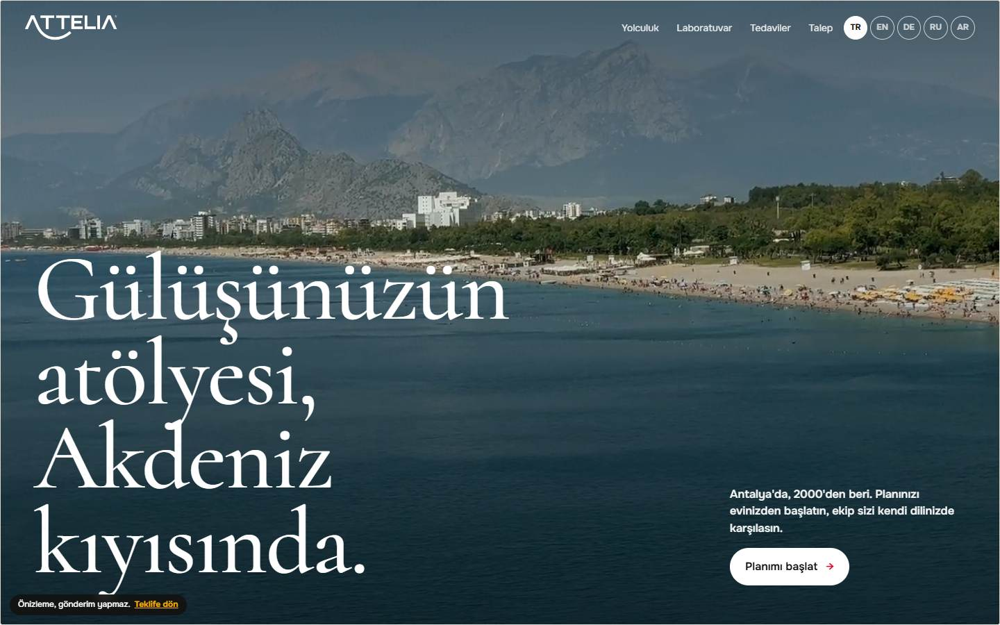
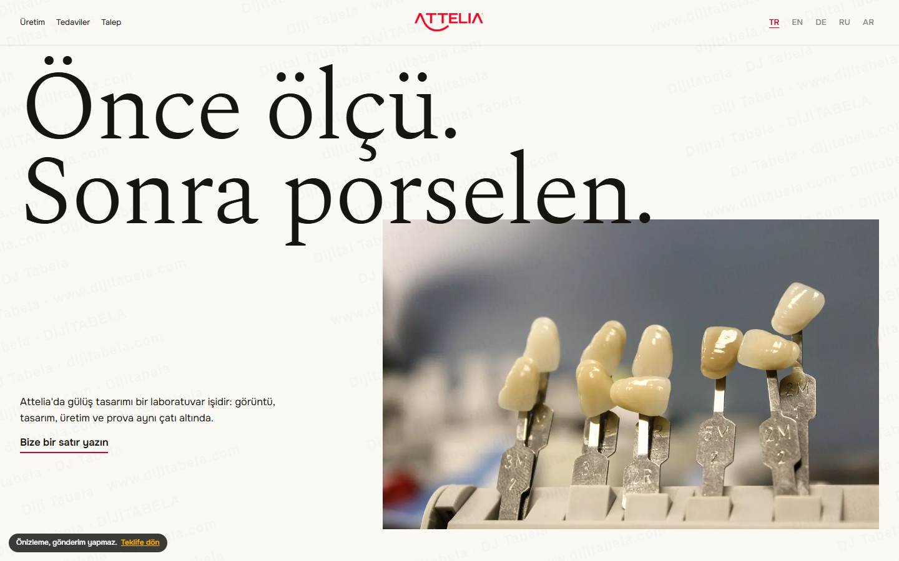
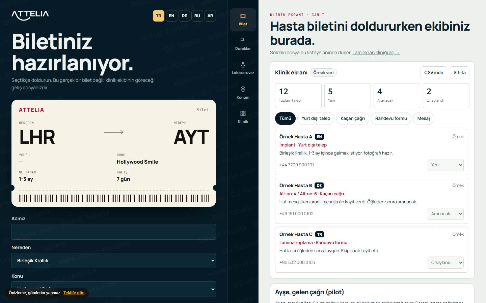
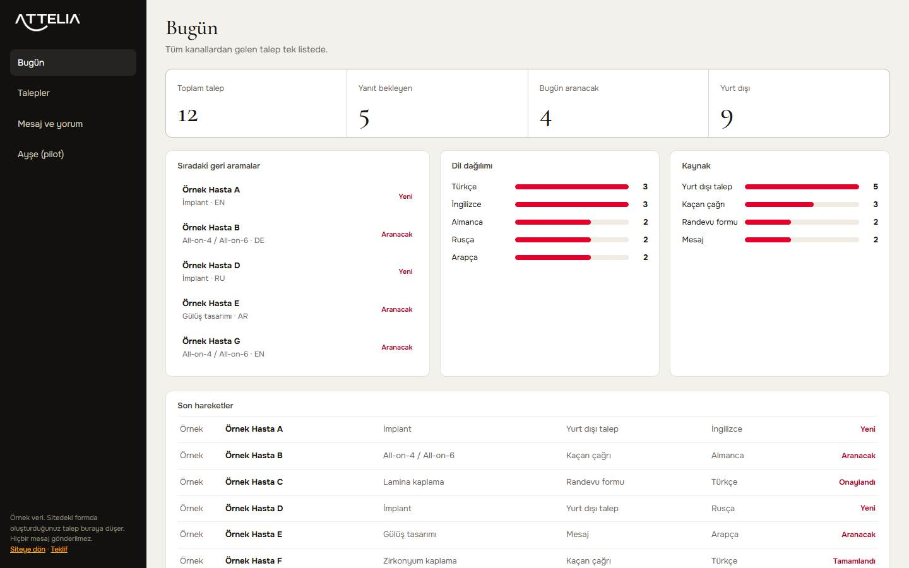

01Gördüğümüz eksikler
Ana sayfada All-on-4 için 4 gün, teknoloji sayfasında 2 gün yazıyor. Hakkımızda sayfasında 29, teknoloji sayfasında 27+ tedavi odası var.
Nerede: Ana sayfa, /our-technology, /about-usTek doğru bilgi, tüm dillerde.
Dil seçicide English, Deutsch, Français, Русский var; sayfa etiketlerinde ar yok.
Nerede: Ana sayfa üst menü5 dilli karşılama, sağdan sola düzenle.
Ana bağlantı hazır metinsiz açılıyor (wa.me/905413125024). Hasta konuyu baştan yazıyor.
Nerede: Ana sayfa üst şeritÖn kayıt akışı konu, dil ve zamanı önce sorar.
Ad, e-posta, telefon, iletişim yolu, tedavi, mesaj ve onay tek ekranda.
Nerede: /get-a-quoteBeş kısa adım ya da tek satırlık form.
Sayfa kaynağında JSON-LD bulunmadı.
Nerede: Ana sayfa kaynağıDentist şeması ve adres verisi.
Numara yazılı, tel: bağlantısı yok.
Nerede: Ana sayfa, 390 pxDokun-ara eklenir.
443 video ve 5,63 bin abone; Instagram'da 116 bin takipçi.
Nerede: Kanal sayfalarıİsteğe bağlı içerik planı.
Doğrulayamadıklarımız
- Google PageSpeed puanı (Google servisi 429 döndü)
- TikTok hesabı (sayfa içeriği gelmedi)
- Instagram son paylaşım tarihi
- Formların gerçekten çalıştığı (göndermedik)
02Çözüm
TR, EN, DE, RU, AR. Arapçada sayfa sağdan sola döner.
Sitede dental holiday anlatılıyor; ülke, konu, belge, geliş ve transfer sorusu tek dosyada.
Sitede UK ve Almanya etkinlikleri duyuruluyor; saat farkı otomatik gösterilir.
Hat meşgulse arayana kendi dilinde mesaj gider, ön kayıt alınır.
Mesaj, form ve çağrı tek listede; geri arama sırası, dil ve kaynak dağılımı, hasta dosyası.
Sitenizdeki ton adlarıyla renk önizlemesi. Tonu hekim belirler.
03Çalışan prototip
3 ayrı dünya + panel

Antalya kıyısı videosuyla açılır. Hasta yolculuğu altı durakta kayarak anlatılır. Laboratuvar ve dört beyaz tam ekran.
Aç ve dene
Porselen işçiliği önde. Süreç yatay kayar, talep tek satırlık mektup gibi yazılır.
Aç ve dene
Hasta seçtikçe biniş kartı dolar, ekip yan ekranda dosyayı canlı görür.
Aç ve dene
Prototipte oluşturduğunuz talep buraya düşer. Kart sürükleyin, dosya açın.
Aç ve deneForm ve mesajlar gönderilmez, kliniğinize ulaşmaz. Görseller temsilidir, lisanslı stoktur; gerçek hasta görseli, yorum ve fiyat yoktur. Sizin fotoğraflarınızla değiştirilir.
04Fiyat
| Çok dilli talep ve randevu sistemi (5 dil, huni, ön kayıt) | 14.900 TL |
| Klinik paneli | 29.900 TL |
| Site düzeltmeleri: Arapça, yapı verisi, dokun-ara, bilgi birliği (6 saat × 1.500 TL) | 9.000 TL |
| Liste toplamı | 53.800 TL |
| Size özel toplam | 48.900 TL |
Tek seferliktir. KDV dahil değildir.
Geçerlilik: Bu teklif 15 gün geçerlidir (19 Kasım 2026 sonuna kadar).
Sınır: Tıbbi içerik ve onay metinleri kliniğin sorumluluğundadır. KVKK uyumu klinikle ayrıca netleştirilir; sonuç veya hasta sayısı garantisi verilmez.
İsteğe bağlı ekler
Eklerin fiyatları da KDV hariçtir. Aylık hizmetlerde her Ocak TÜFE kadar güncelleme uygulanır.
WhatsApp: 0501 945 21 84Ara: 0501 945 21 84